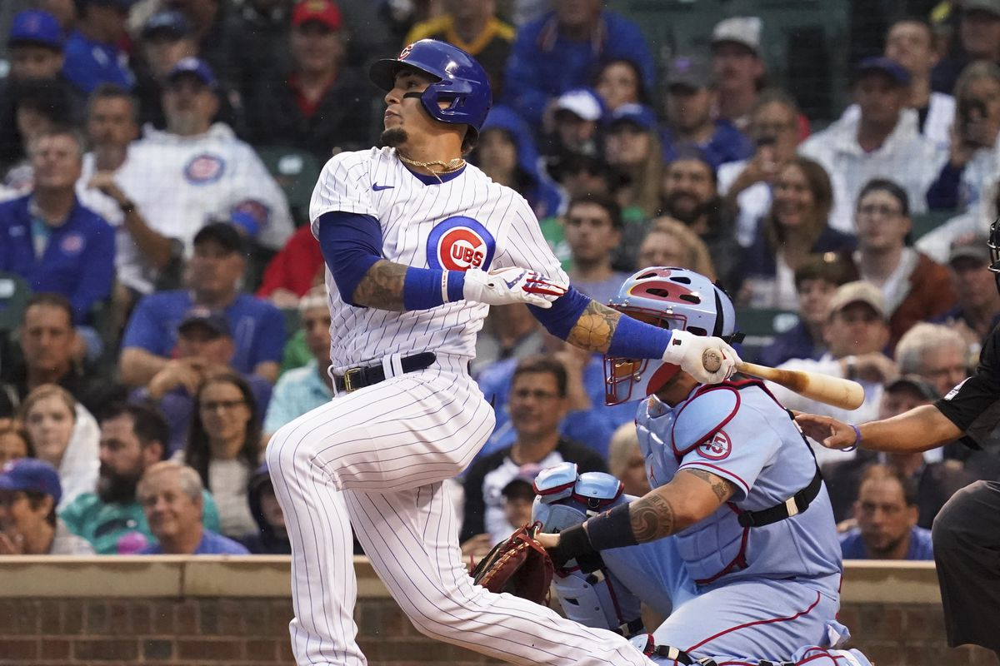

About Javier Baez
Javier Baez is a MLB All-Star shortstop for the New York Mets. His former baseball team is the Chicago Cubs, who he helped win the 2016 World Series Championship.
Baez taking a huge swing
Player Profile
- He has a power swing that creates opportunities for plenty of home runs
- He is a solid fielder and has a strong throwing arm, as he has been awarded a Gold Glove
- He is nicknamed "EL Mago" (Spanish for magician) due to his spectacular baserunning abilities
Accomplishments and Awards
- 2x All-Star (2018 and 2019)
- National League RBI leader in 2018
- Silver Slugger in 2018
- World Series Champion in 2016
Highlight Reel
- Compilation of Javier Baez's best baserunning hightlights that have dubbed him the nickname "El Mago": Magical Slides and Steals
- Compilation of Javier Baez's best batting highlights: Batting Highlights